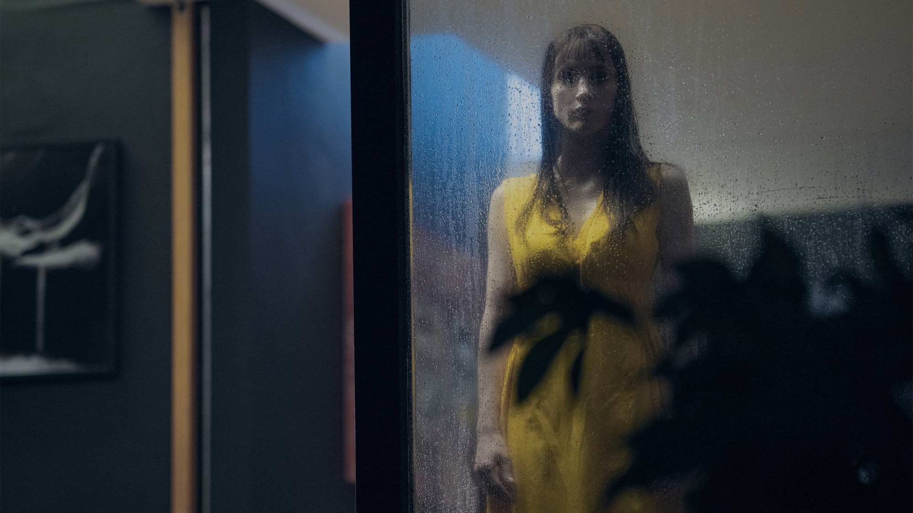
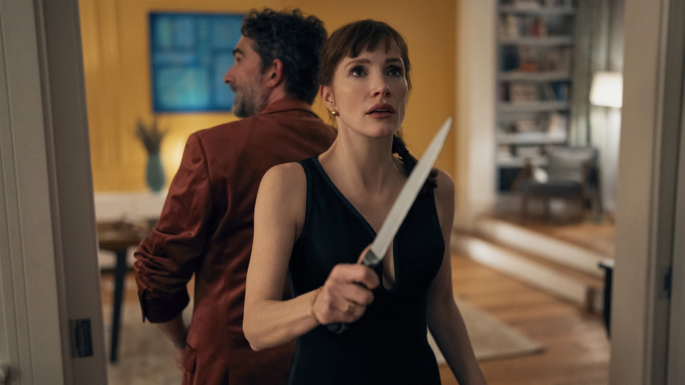
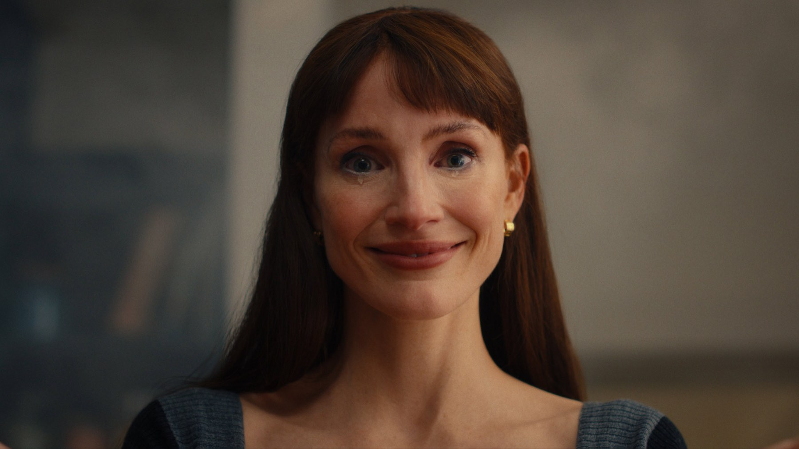

Mammina
Una madre, il suo doppio e una casa sola: l'horror di Rob Savage parte da un'idea forte, ma la critica internazionale è severa
Una madre che apre la porta e quella che sta dietro l'armadio hanno lo stesso viso. L'idea di partenza di Mammina è così semplice e così scomoda che basterebbe da sola a fare un buon horror, e infatti è la parte del film su cui nessuno discute. Il problema, secondo le recensioni internazionali uscite in questi giorni, arriva dopo. Il film è nelle sale italiane dall'8 ottobre 2026.
Di cosa parla Mammina?
Bela, una bambina, instaura un rapporto con un'entità che abita nella sua casa e che assomiglia in modo inquietante a sua madre Ursula. Jessica Chastain interpreta entrambe, la madre e il suo doppio, mentre Jay Duplass è il padre Russell e Arabella Olivia Clark è Bela. Nel cast ci sono anche Dichen Lachman, Arian Moayed e Karen Allen. La regia è di Rob Savage, la sceneggiatura di Nathan Elston, e il film dura 93 minuti.
Dietro il progetto c'è il marchio di James Wan: Mammina è prodotto da Atomic Monster insieme a Blumhouse, con un budget di 19 milioni di dollari. Le riprese si sono svolte a Dublino, tra il 12 maggio e il 9 luglio 2025.

Non è Coraline: da dove arriva la storia
Fin dal trailer, il paragone con Coraline sembra obbligato: una bambina, una madre alternativa, una porta che non dovrebbe esistere. La guida di JustWatch ricorda però che Mammina non nasce da Neil Gaiman. Il film è tratto da Incidents Around the House, decimo romanzo di Josh Malerman, già autore di Bird Box, uscito negli Stati Uniti nel 2024 e tradotto da Giunti con il titolo L'altra mamma. Nel libro a raccontare è la stessa Bela, e l'entità le chiede ogni sera il permesso di entrare nel suo cuore.
Qui sta la differenza che ci interessa. Coraline manda la protagonista in un altro mondo; Mammina tiene tutto dentro la stessa casa, senza dimensioni parallele, e sulla carta è una storia più claustrofobica. Il paragone ci dice anche perché il film aveva attese alte: la paura del volto familiare che sbaglia di un dettaglio è una delle più efficaci che il cinema abbia a disposizione. Un'idea simile, però, vive di sottrazione, e le critiche di Harrison e Bibbiani, che leggerete qui sotto, descrivono un film che accumula invece di togliere.
Cosa ne dice la critica
I numeri sono netti. A ottobre 2026 Rotten Tomatoes assegna a Mammina il 19% di recensioni positive su 52, e Metacritic una media di 39 su 100 su 11 recensioni, definita «generalmente sfavorevole». La sintesi di Rotten Tomatoes salva una cosa, la prova di Chastain come incarnazione spettrale di un genitore soffocante, e poi conclude che il film è troppo sciocco perché i suoi spaventi, a tratti efficaci, diventino un insieme davvero inquietante.
Le singole voci, riportate dalla stessa pagina, vanno nella stessa direzione con sfumature diverse. Eddie Harrison, su film-authority.com, scrive in sostanza che il film attraversa a gran velocità un conflitto dopo l'altro senza che nessuno lasci il segno o cambi l'esito della storia. William Bibbiani, su TheWrap, segnala spaventi concentrati all'inizio e un finale sempre meno credibile, pur riconoscendo che il film può funzionare per una serata tra amici in cerca di brividi. Alonso Duralde, su The Film Verdict, lo giudica deludente perché prende molto da altre opere e compie scelte creative povere.
Non mancano le voci a favore, e ci sembra giusto citarle. Alison Foreman, su IndieWire, riconosce a Savage un'emozione genuina che giustifica l'eccesso, anche se l'appetito per lo spettacolo prende a volte il sopravvento sulla misura del racconto. È un punto interessante, perché indica la stessa frizione degli altri critici da un'altra parte: il problema non sarebbe la mancanza di idee, ma il troppo.

Jessica Chastain e il doppio ruolo
Se c'è un elemento su cui le fonti si avvicinano, è Chastain. La sintesi di Rotten Tomatoes parla di una prova «valorosa» di Chastain. Il doppio ruolo era la promessa più forte del progetto: interpretare una madre vera e un suo calco inquietante chiede un controllo preciso dei dettagli, sguardo, postura, tono. Non avendo parole di recensori italiani su questa prova specifica, preferiamo non spingerci oltre e lasciare il giudizio a chi vedrà il film.
Il botteghino e l'accoglienza
Il film ha esordito negli Stati Uniti il 9 ottobre 2026. Secondo Wikipedia, a ottobre 2026 l'incasso mondiale registrato era di 3,6 milioni di dollari: una cifra parziale, perché il film è appena arrivato in sala e i numeri del primo weekend non sono ancora definitivi. Per un horror di Halloween, con un budget contenuto, la partita si giocherà nelle prossime settimane, e noi aggiorneremo la pagina se il quadro cambierà in modo significativo.
Vale la pena vederlo al cinema?
Dipende da cosa cercate. Se volete un horror da vedere in compagnia, per saltare sulla poltrona e commentare ad alta voce, le recensioni di TheWrap lasciano uno spiraglio: il film può funzionare come intrattenimento da sabato sera. Se invece sperate in un incubo domestico costruito sul silenzio e sul sospetto, la critica dice che qui non lo troverete. Su un punto siamo prudenti: il giudizio resta quello della critica che abbiamo letto, e potrebbe cambiare quando arriveranno più recensioni italiane.
Una premessa da horror vero (una madre e il suo volto in un'altra stanza) che, secondo la critica letta, si disperde tra troppi spaventi e un tono che scivola nel sorriso involontario. Se da un lato Chastain e l'idea del doppio meritano curiosità, dall'altro un 19% su Rotten Tomatoes pesa. Lo consigliamo a chi cerca un brivido leggero e senza pretese, non a chi aspetta il nuovo Hereditary.
Domande frequenti
Quando esce Mammina in Italia?
Nelle sale italiane dall'8 ottobre 2026, secondo la scheda di Cinefilos. Negli Stati Uniti è uscito il 9 ottobre con il titolo Other Mommy.
Mammina è ispirato a Coraline?
No. È tratto dal romanzo Incidents Around the House (2024) di Josh Malerman, pubblicato in Italia da Giunti con il titolo L'altra mamma, come spiega la guida di JustWatch.
Quanto dura Mammina?
93 minuti, secondo Wikipedia e la scheda di TMDB.
Fa davvero paura?
Le recensioni sono divise sul punto: la sintesi di Rotten Tomatoes parla di spaventi a tratti efficaci, ma di un insieme troppo sciocco per funzionare.